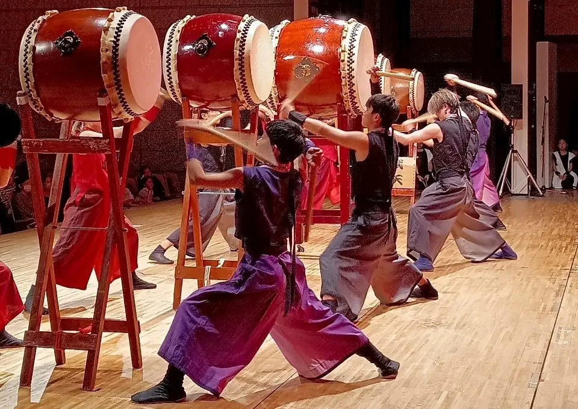
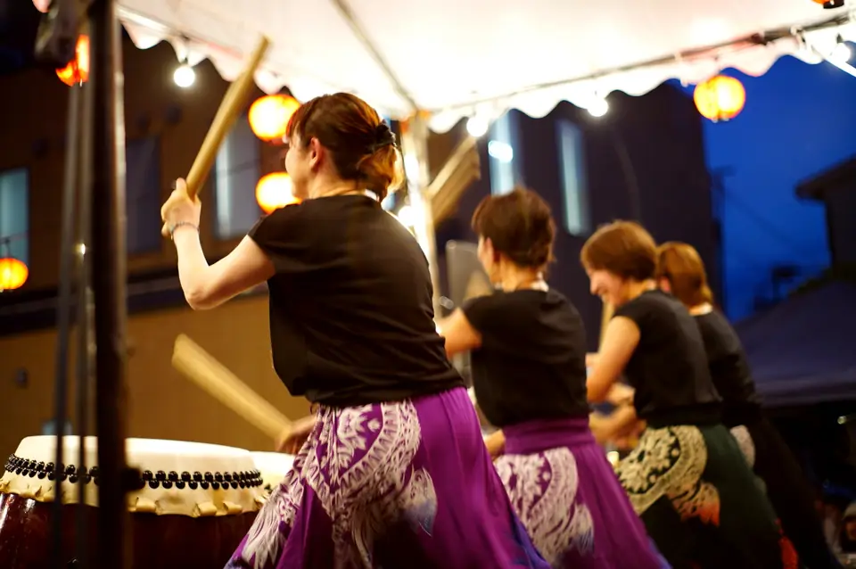
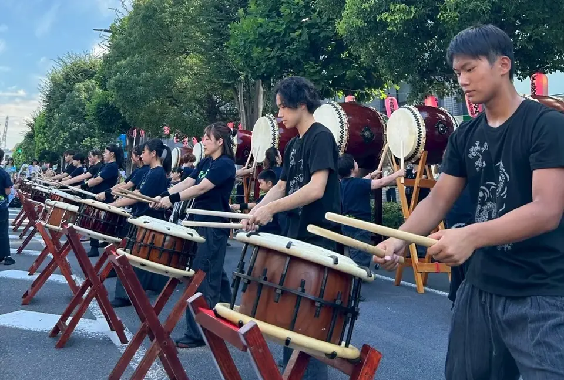
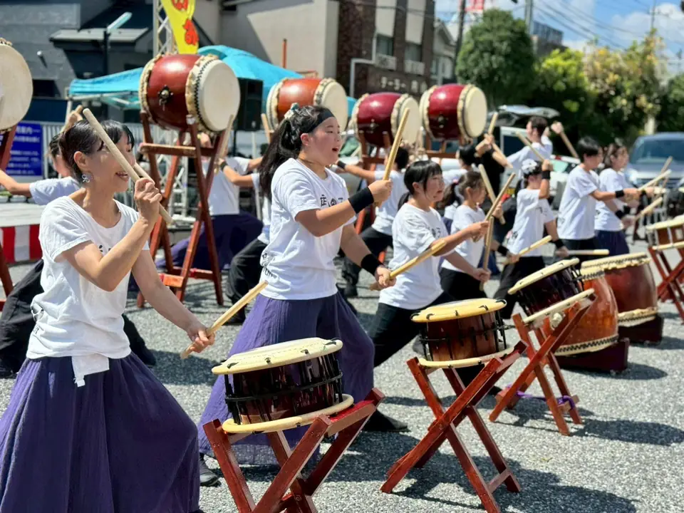
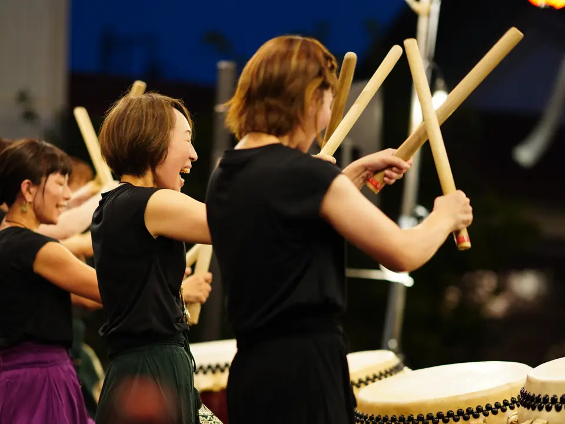
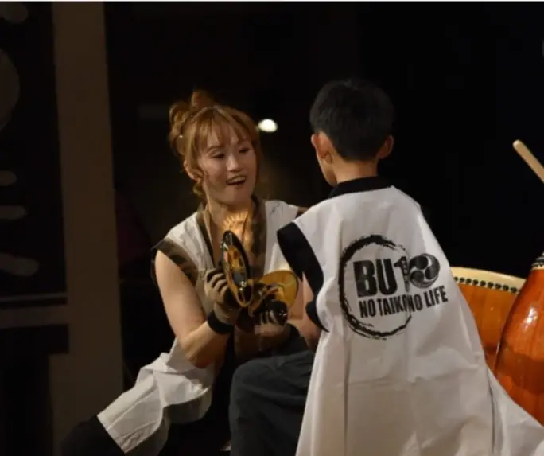
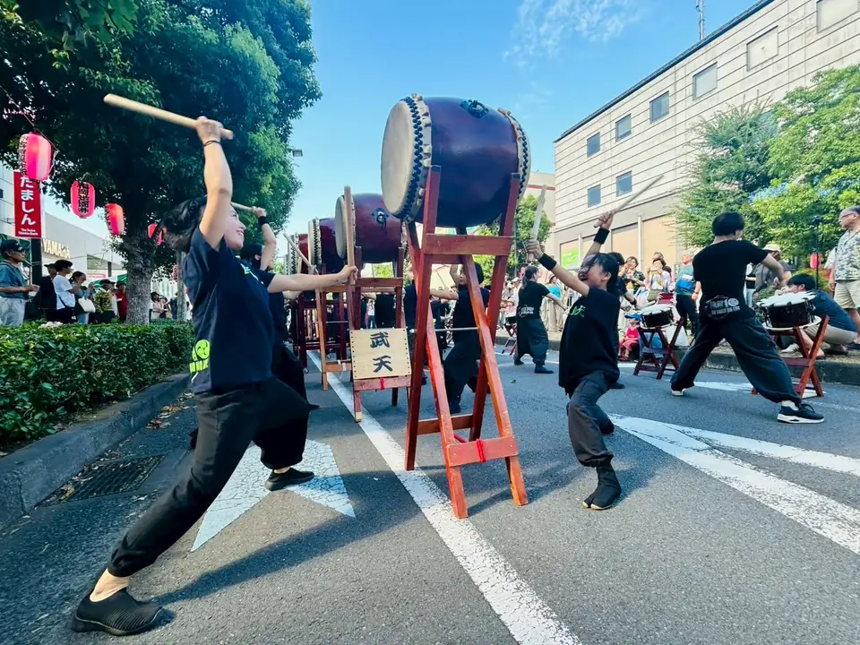
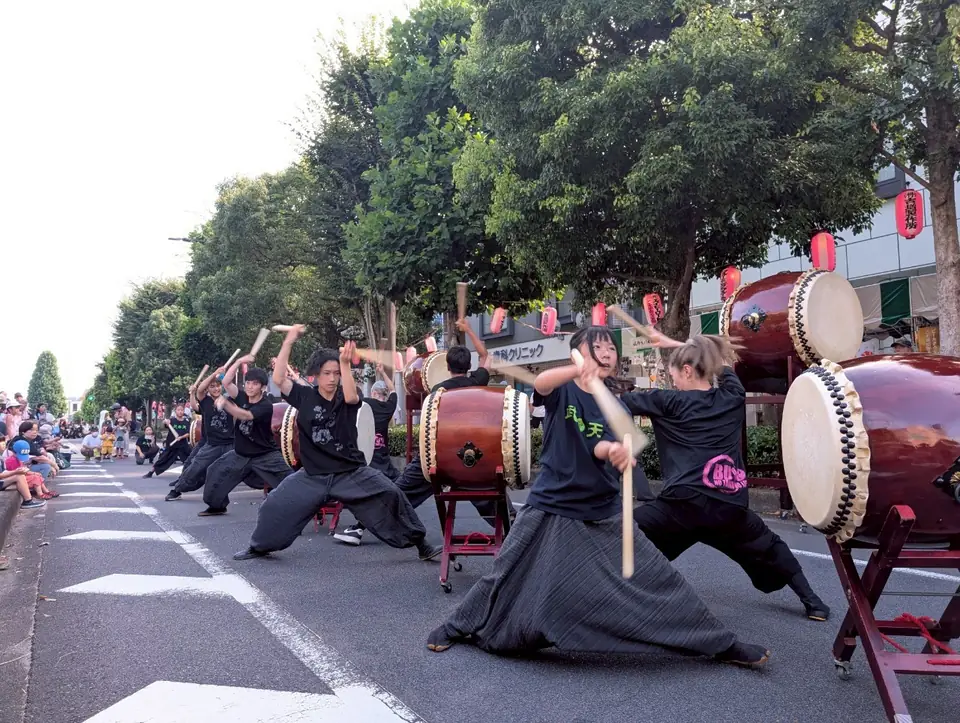
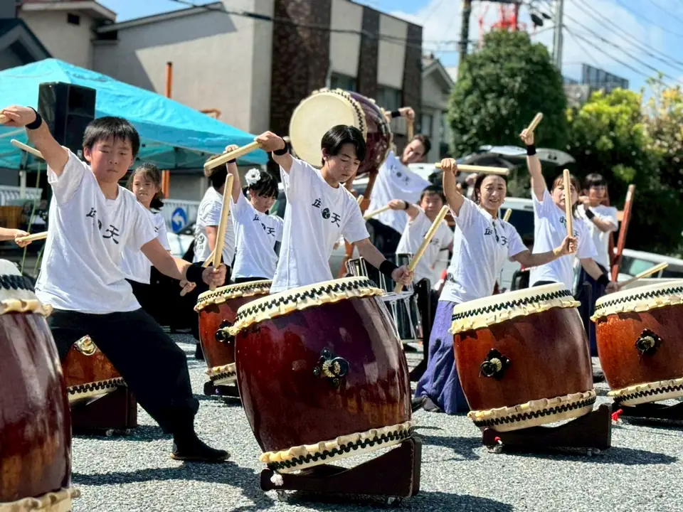

和太鼓 武天（わだいこ ぶてん）は、東京都あきる野市を拠点に、青梅市などでも活動する和太鼓グループです。会員約70名、小学1年生～70代で構成され、親子チーム、大人チーム、若者チームで活動。
様々なイベントに合わせて演目、人数、構成を変え演奏します。持ち曲は全て独自で作曲、振り付け、曲の変化を楽しむ創作和太鼓です。見てくださる方々の心に響く音を目指し、地域との繋がりを大切に活動の場を広げています。






私たちは、
和太鼓 武天（わだいこ ぶてん）は、東京都あきる野市を拠点に、青梅市などでも活動する和太鼓グループです。会員約70名、小学1年生～70代で構成され、親子チーム、大人チーム、若者チームで活動。
様々なイベントに合わせて演目、人数、構成を変え演奏します。持ち曲は全て独自で作曲、振り付け、曲の変化を楽しむ創作和太鼓です。見てくださる方々の心に響く音を目指し、地域との繋がりを大切に活動の場を広げています。



和太鼓 武天は2007年の結成以来、地域のお祭りや文化イベント、企業イベントなど、多岐にわたる舞台で演奏を行ってきました。
久保熊野神社
JAあきがわ五日市支店駐車場 メインステージ
秋川駅前通り（たましん前）
コピスみよし
キララホール
武天の魅力は、舞台でのかっこいい演奏だけにとどまらず、普段の練習は笑顔が絶えない、とてもアットホームな雰囲気です。子供から大人まで、仲間と一緒に太鼓で笑い、喜びや感動、ワクワク、お互いの成長を感じています。


公演予定を読み込んでいます。
和太鼓 武天(わだいこ ぶてん)では、あきる野市のふるさと納税を通じたご支援を受け付けております。皆様からの温かいご支援は、地域文化の振興や活動の充実に役立てられます。返礼品もご用意しておりますので、ぜひご覧ください。
ふるさと納税詳細を見る（さとふる）